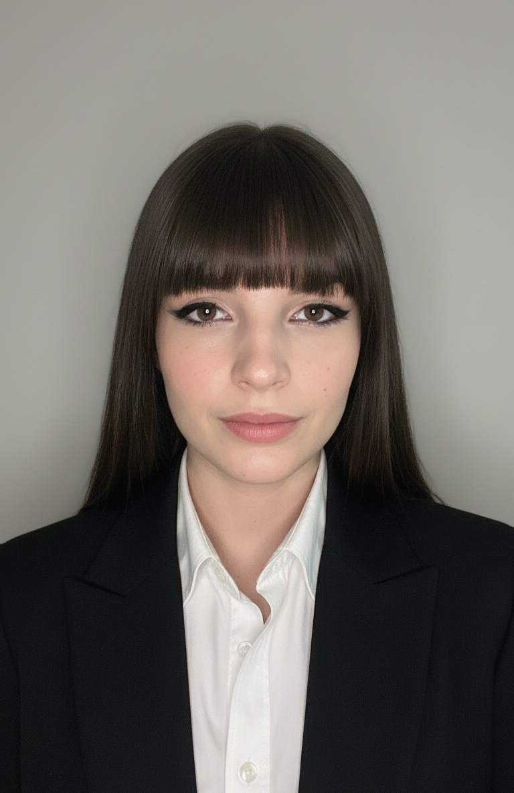

Sono una Junior Web Developer & UX/UI Designer con una grande passione per l'estetica e la funzionalità. Dopo un diploma in ambito turistico, nel 2025 ho intrapreso un percorso di specializzazione nel Frontend Development, approfondendo HTML, CSS e JavaScript. Recentemente ho integrato il mio profilo con competenze in UX/UI Design, permettendomi di curare l'intero processo creativo: dall'ideazione dell'interfaccia alla sua realizzazione tecnica. Quando non sono davanti a un editor di codice, mi trovi nel mondo del cosplay, un ambito in cui sono molto attiva in Italia e che alimenta costantemente la mia creatività.
Da questa pagina potete scoprire i miei due mondi: il cosplay e lo sviluppo web, con i miei progetti e le mie creazioni.